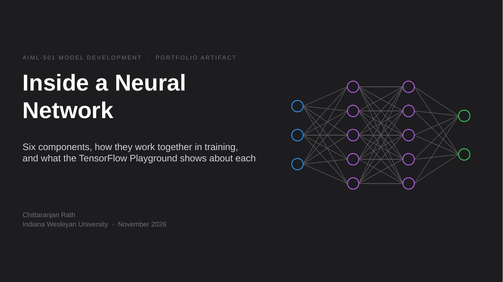

Artifacts / Inside a Neural Network / Slides
Inside a Neural Network

1 / 15
Speaker notes
Created for AIML-501 Model Development, Indiana Wesleyan University, November 2026. The artifact page with objective, process, tools and references is here.